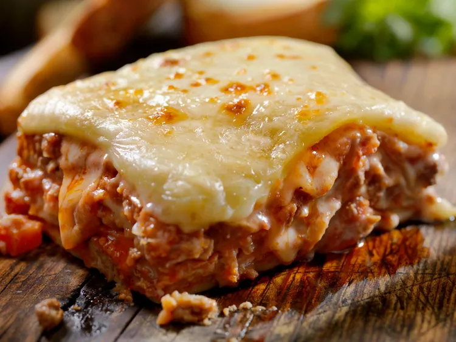

Recipe for lasagna

When you're in need for a comforting dish, this Classic Lasagna is the perfect recipe.
Originally from our May 1982 issue, this vintage recipe has been around a while, but we come back to it again and again.
Ingredients
Classic lasagna
Makes 6-8 servings
- 1 pound ground beef
- 2 tablespoons vegetable oil
- 1 can whole tomatoes, chopped
- 2 cans tomato paste
- 2 teaspoons salt
- 1 teaspoon Italian seasoning
- 1/4 teaspoon pepper
- 1/4 teaspoon crushed red pepper
- 1/8 teaspoon garlic powder
- 1 package lasagna noodles
- 1 cup shredded mozzarella cheese
- 1 cup ricotta or small curd cottage cheese
- 1/4 cup grated Parmesan cheese
- 3 to 4 slices mozzarella cheese, halved diagonally